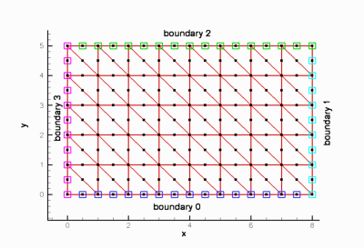
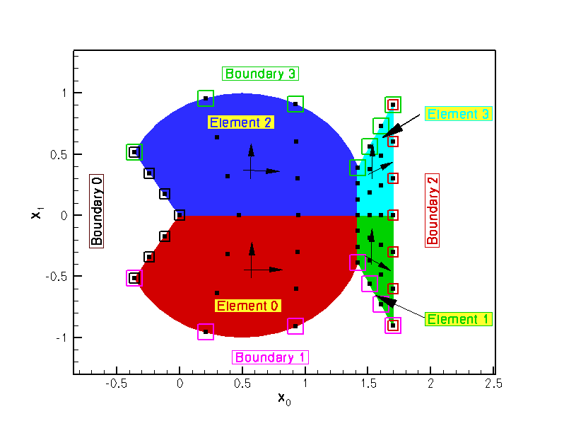

This document provides a brief description of the various structured meshes that are distributed with the library. Most of these meshes were developed for specific example codes but we expect them to be useful in other problems too. Many of the meshes exist in many different variants, usually constructed by multiple inheritance. When meshes are relatively trivial variations of each other, e.g. a basic mesh and its refineable equivalent, we only list the mesh once. The detailed documentation for the mesh (obtained by following the link) contains the full inheritance diagram, showing the mesh's own base classes and any meshes that are derived from it. For each mesh, we provide a link to a fully-documented example problem that illustrates its use.
We stress that the key feature of any given mesh is its topology, rather than the specific shape for which it was originally developed. For instance, oomph-lib does not provide a mesh for the discretisation of an annular domain with quadrilateral elements. However, such a mesh is trivial to construct by deriving it from, e.g., the SimpleRectangularQuadMesh (a mesh that discretises a rectangular domain), and then adjusting its nodal positions. Consult the example in the (Not-So-)Quick-Guide for details.
Reminder: General conventions to facilitate the re-use of meshes
Since mesh generation tends to be most tedious part of any numerical simulation, oomph-lib's overall data structure, described in detail elsewhere, aims to facilitate the re-use of meshes in many different applications. For this purpose most specific FiniteElements in oomph-lib are derived by multiple inheritance, combining a "geometric" FiniteElement (e.g. a line/quadrilateral/brick-shaped element from the QElement<DIM,NNODE_1D> family) with an equations class (such as PoissonEquations<DIM>) that implements the weak form of a specific PDE. For instance, oomph-lib's quadrilateral nine-node Poisson element, QPoissonElement<2,3>, is derived from the PoissonEquations<2> equations class and the QElement<2,3> geometric FiniteElement.
The mesh generation process is mainly concerned with the geometric properties of the mesh's constituent FiniteElements (their topology, number of nodes, etc.) which are defined by the geometric FiniteElement. This makes it possible to use a mesh that was originally developed for the solution of a Poisson equation with a QPoissonElement<2,NNODE_1D>, say, for the solution of an advection-diffusion problem with a QAdvctionDiffusionElement<2,NNODE_1D> since both elements are derived from the same geometric FiniteElement. Only two aspects of the mesh generation process require information that is not provided by the geometric FiniteElement:
- The number of values to be stored at the various nodes in the mesh: For instance, if a mesh that is designed for quadrilateral elements from the
QElement<2,NNODE_1D>family of geometric elements is used to solve a (scalar) Poisson equation with nine-noded elements, eachNodehas to store a single value. However, if the same mesh is used for the solution of the 2D Navier-Stokes equations with a nine-node quadrilateral elements of typeQTaylorHoodElement<2>, nodes located at the elements' four vertices have to store three values (two velocity components and one pressure) whereas nodes located at the elements' interior and on their edges only have to store two values (the two velocity components).
- The number of "history values" required by the timestepping procedure (if any): For instance, if the mesh is used for the solution of a Poisson problem, no "history" values are required. If the same mesh is used for the solution of an unsteady heat problem, the number of history values required is determined by the
TimeStepperused to approximate the time-derivative of the nodal values.
The meshes used in our example codes (and all the meshes listed below) have a common structure that allows the required information to be become available to the mesh constructor:
- All meshes are templated by the element type,
ELEMENT.
- The final argument of all mesh constructors is a pointer to a
TimeStepper. We provide a default for this argument – a pointer to theSteady<0>timestepper, defined (as static member data) in theMeshbase class.
The availability of the template parameter allows the mesh generator to build elements of the required type. Nodes are generally built by the FiniteElement::construct_node(...) function whose arguments are the Node's local node number within the current element, and a pointer to the timestepper. These arguments provide all the information that is required to build Nodes with the right number of values (as required by the element) and history values (as required by the TimeStepper). When the function FiniteElement::construct_node(...) is called, it creates the new Node, stores a pointer to the newly created Node in the FiniteElement's own lookup scheme, and returns that pointer. This allows the pointer to the newly created Node to be stored in the Mesh's own lookup scheme for its constituent Nodes. The (Not-So-)Quick-Guide contains a section that explains how to write simple meshes.
Mesh FAQ
When using a mesh that was originally developed for a different application, it is sometimes necessary establish the node/element/boundary numbering scheme employed by the mesh writer. While we generally assume that the mesh writer will have carefully documented his/her code, here is what to do if he/she hasn't:
- How do I find out how the elements are numbered?
The functionMesh::output(...)outputs the elements in the order in which they are stored internally. If you prefer a different element numbering scheme you can re-number the elements; see e.g. the member functionelement_reorder()in the RectangularQuadMesh class.
- How do I find out how the nodes are numbered?
The functionMesh::node_pt(j)provides pointer-based access to thej- thNodein the mesh. To plot a node's position, you can determine its coordinates from theNode::x(...)function.
- How do I find out how the mesh boundaries are numbered?
The functionMesh::output_boundaries(...)outputs the nodes located on the mesh boundaries in a tecplot-able format. Nodes that are located on separate mesh boundaries are contained in separate tecplot zones.
With this information it should be straightforward to use any of the meshes listed below in one of your own problems. The example code listed next to each mesh illustrates its use in an actual driver code. If you develop a new mesh, let us know! If it is written according to oomph-lib's coding standards, we'll be delighted to include it into the library.
Mesh list
| Mesh | Representative Mesh plot |
OneDMesh<ELEMENT>
| 
|
SimpleRectangularQuadMesh<ELEMENT>
| 
|
RectangularQuadMesh<ELEMENT>
|
|
TwoDAnnularMesh<ELEMENT>
| 
|
ChannelWithLeafletMesh<ELEMENT>
| 
|
SimpleRectangularTriMesh<ELEMENT>
|

|
FishMesh<ELEMENT>
|

|
CollapsibleChannelMesh<ELEMENT> - This mesh can be used with all
FiniteElementsthat are derived from the geometric finite elementQElement<2,NNODE_1D>. - This mesh forms the basis for numerous derived meshes
- The curvilinear boundary is represented by a
GeomObjectand the mesh has aDomainrepresentation, allowing aMacroElement- based node update. - There is also a version of the mesh that performs the node update in response to changes in the domain boundary by an algebraic node update.
- A refineable version of this mesh exists.
- This mesh is used in the driver code for the solution of the 2D unsteady Navier-Stokes equations in 2D channel with an oscillating wall.

CylinderWithFlagMesh<ELEMENT> - This
Meshwas mainly developed for the solution of Turek & Hron's FSI benchmark problems. The curvilinear boundaries of the cylinder and the "flag" are represented byGeomObjects. - A refineable version of the mesh exists.
- The node-update in response to changes in the shape of the "flag" can be performed by a version based on an
AlgebraicMeshor using aDomain/MacroElement- based node update. - The bulk elements have to be derived from the geometric finite element
QElement<2,NNODE_1D>.
- This mesh is used in the driver code for Turek & Hron's FSI benchmark problems and their non-FSI equivalents.
BrethertonSpineMesh<ELEMENT> - This
SpineMeshwas mainly developed for the simulation of the Bretherton problem but it can, of course, also be used in other problems. The mesh topology would be suitable for the simulation of flows in a bifurcating channel, say. - The bulk elements have to be derived from the geometric finite element
QElement<2,NNODE_1D>.
- This mesh is used in the driver code for the simulation of the Bretherton problem.
QuarterCircleSectorMesh<ELEMENT> - This mesh can be used with all
FiniteElementsthat are derived from the geometric finite elementQElement<2,NNODE_1D>. - This mesh forms the basis for numerous derived meshes
- The curvilinear boundary is represented by a
GeomObjectand the mesh has aDomainrepresentation, allowing aMacroElement- based node update. - There is also a version of the mesh that performs the node update in response to changes in the domain boundary by an algebraic node update.
- A refineable version of this mesh exists.
- The refineable version of this mesh is used in the driver code for the simulation of flow inside a oscillating ellipse.
SimpleCubicMesh<ELEMENT> - This mesh can be used with all
FiniteElementsthat are derived from the geometric finite elementQElement<3,NNODE_1D>. - A refineable version of this mesh exists.
- This mesh is used in the self-test code
q_convergence_3d.cc

SimpleCubicTetMesh<ELEMENT> - This is a simple structured mesh for tet elements.
- This mesh can be used with all
FiniteElementsthat are derived from the geometric finite elementTElement<3,NNODE_1D>.
- This mesh is used in the self-test code
t_convergence_3d.cc
QuarterTubeMesh<ELEMENT> - This mesh can be used with all
FiniteElementsthat are derived from the geometric finite elementQElement<3,NNODE_1D>. - This mesh forms the basis for numerous derived meshes
- The curvilinear boundary is represented by a
GeomObjectand the mesh has aDomainrepresentation, allowing aMacroElement- based node update. - There is also a version of the mesh that performs the node update in response to changes in the domain boundary by an algebraic node update.
- A refineable version of this mesh exists.
- The refineable version of this mesh is used in the driver code for the simulation of 3D entry flow into a cylindrical tube.

TubeMesh<ELEMENT> - This mesh can be used with all
FiniteElementsthat are derived from the geometric finite elementQElement<3,NNODE_1D>. - This mesh forms the basis for numerous derived meshes that describe topologically-tube-shaped domains.
- The entire domain is represented by a
GeomObjectand the mesh has aDomainrepresentation, allowing aMacroElement- based node update. - A refineable version of this mesh exists.
- The refineable version of this mesh is used in the driver code for the simulation of 3D flow in a curved cylindrical pipe.

EighthSphereMesh<ELEMENT> - This mesh can be used with all
FiniteElementsthat are derived from the geometric finite elementQElement<3,NNODE_1D>. - A refineable version of this mesh exists.
- The refineable version of this mesh is used in the driver code for the adaptive solution of the 3D Poisson equation.
PDF file
A pdf version of this document is available. \